Cómo escribir pseudocódigo, dibujar diagramas de flujo, practicar con retos y trabajar con tu clase. Para alumnos y para profes, en el celular y en la computadora.
App de Android
Navegador del celular
Navegador de la computadora
Jaguar es el mismo en todos lados; lo que cambia es dónde están los botones. Cuando algo se hace distinto, verás dos cajas: En el celular y En la computadora. Si la ventana del navegador es angosta, Jaguar se ve como en el celular.
Primera parte
Para alumnos
Todo lo que necesitas para hacer tus programas y tus tareas. No necesitas cuenta ni correo para usar Jaguar.
1La primera vez
Al abrir Jaguar por primera vez te pregunta cómo quieres empezar. Elige Estoy aprendiendo.
Así entras en modo Básico: solo ves lo necesario para escribir y ejecutar tus programas. Lo puedes cambiar cuando quieras.
En el celular
Empiezas en el código. Un aviso arriba te dice dónde está el diagrama de flujo.
En la computadora
Empiezas en el diagrama de flujo, como en clase.
Si no sabes por dónde empezar, toca Empezar el Reto 1 en ese aviso. Viene con pistas.
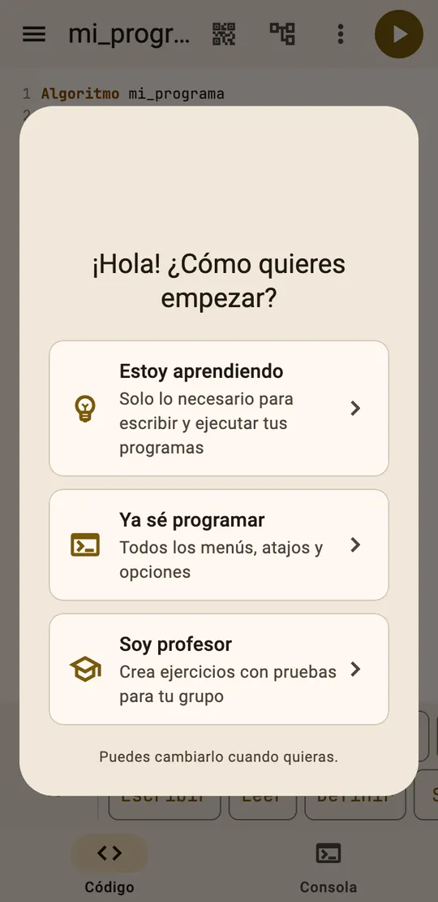
Lo primero que ves al abrir Jaguar.
2Escribe y ejecuta tu programa
Escribe entre Algoritmo y FinAlgoritmo: Algoritmo, Escribir, Leer, Si, Mientras… Al escribir, Jaguar cierra solo los paréntesis, las comillas y los bloques como FinSi.
En el celular
Toca el botón redondo ▶ de arriba a la derecha. Jaguar pasa solo a la pestaña Consola. Mientras el programa corre, el botón se pone rojo ■ y sirve para detenerlo.
En la computadora
Presiona ▶ Ejecutar en la barra de arriba, o Ctrl+Enter o F9. La consola está debajo del código. Para detener: Shift+F9.
Cuando tu programa usa Leer
La consola dice «El programa espera un dato (Leer)…». Escribe el dato abajo y presiona Enter o la flecha de enviar. Lo que escribiste aparece en azul.
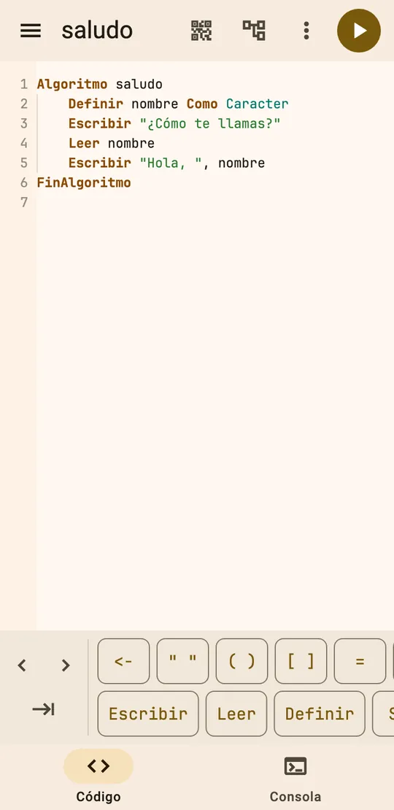
El código y la barra de teclas.
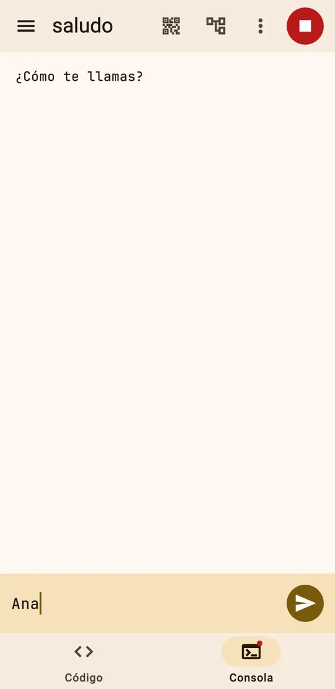
La consola espera un dato.
3La barra de teclas del celular
Debajo del código hay una barra con lo que más cuesta escribir en el teclado del celular: <-, comillas, paréntesis, corchetes, =, <, >, operadores, Y, O, NO, MOD y palabras como Escribir, Leer, Definir, Si, Para, Mientras, Repetir y Segun.
Desliza la barra hacia un lado para ver más teclas.
Las palabras de bloque escriben todo el bloque. Por ejemplo, Si pone Si … Entonces y su FinSi, con el cursor donde va la condición.
Las flechas ‹› mueven el cursor y ⇥ agrega sangría.
En la computadora la barra aparece en modo Básico. En modo Completo la prendes en Ver → Barra de palabras clave.
4Código y diagrama de flujo
El pseudocódigo y el diagrama son el mismo programa. Lo que cambias en uno aparece en el otro.
En el celular
Toca el botón de diagrama de arriba, el que está junto al QR. Cambia entre el código y el diagrama. La pestaña de abajo dice Código o Diagrama según lo que estés viendo.
En la computadora
En la barra de arriba hay tres botones: Pseudocódigo, Diagrama y Ambos. Con Ambos ves el código y el diagrama lado a lado. Atajos: Ctrl+Alt+1, 2 y 3.
El selector Código | Diagrama, debajo de la barra, cambia entre las dos formas de ver el mismo programa.
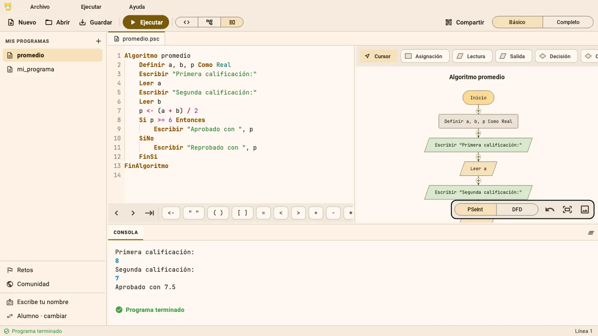
En la computadora, con la vista Ambos: el código, su diagrama y la consola abajo.
5Dibuja tu diagrama
Arriba del diagrama está la paleta de figuras: Asignación, Lectura, Salida, Decisión, Ciclo Mientras, Ciclo Para, Repetir, Según y Llamada.
Elige una figura de la paleta.
Toca un ＋ en una flecha del diagrama, donde quieres que vaya.
Llena lo que pide (por ejemplo, la variable a leer) y toca Agregar.
También puedes tocar un ＋ directamente y elegir la figura de una lista.
En el celular
Mantén presionada una figura para Editar o Eliminar. Acerca o aleja con dos dedos.
En la computadora
Doble clic en una figura para editarla. Clic derecho para editar o eliminar.
Si te equivocas, usa Deshacer en la barra de abajo del diagrama. Ahí mismo puedes guardar el diagrama como imagen para tu tarea.
Si el código tiene un error, el diagrama te pide corregirlo antes de seguir editando.
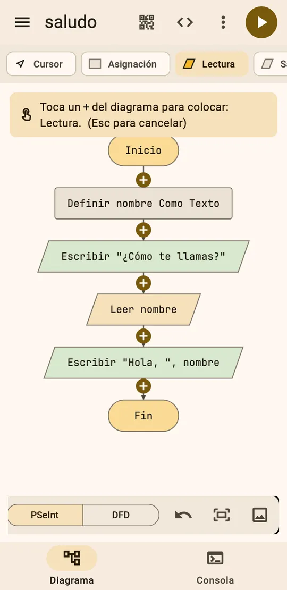
Elegiste Lectura: ahora toca un ＋.
6Cuando hay un error
Mientras escribes, Jaguar subraya en rojo lo que está mal. Los errores están en español y te dicen en qué línea están y cómo arreglarlos.
En el celular
El error aparece completo en una franja roja debajo del código. Tócala y Jaguar te lleva a esa línea.
En la computadora
La explicación aparece al final de la línea. En la barra de abajo ves cuántos problemas hay; haz clic para ir a la línea.
Si el error pasa al ejecutar, la consola lo muestra con un botón Ir a la línea.
Cómo leerlo
Primero ve el número de línea. Luego lee la sugerencia: casi siempre trae el código ya corregido, como en la captura, donde falta poner el texto entre comillas.
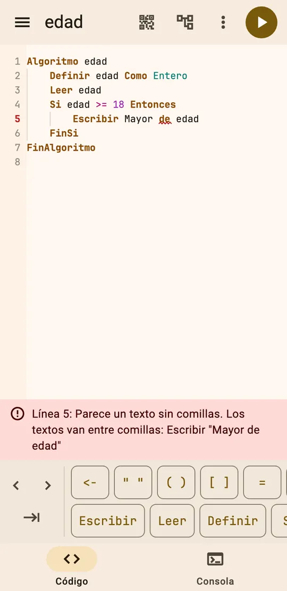
El error con su sugerencia, debajo del código.
7Retos con pistas
Hay 10 retos para practicar por tu cuenta, uno por tema y en orden: variables, operadores, Si, Según, Mientras, Para y Repetir. Funcionan sin internet.
En el celular
Abre el menú ☰ y toca Retos. Dentro del reto, Probar está en la franja del enunciado y los resultados salen en la pestaña Pruebas.
En la computadora
Haz clic en Retos en el panel de la izquierda, o en Ayuda → Retos para practicar. El botón Probar está junto a Ejecutar (Ctrl+Shift+Enter).
Lee el enunciado. Lo ocultas o lo muestras con la flecha.
Si te atoras, toca el foco 💡 para ver una pista. Con Otra pista ves la siguiente. Van de una idea a un ejemplo, sin darte la respuesta.
Escribe tu programa y toca Probar. Jaguar lo revisa con varias pruebas. Algunas son ocultas: sus datos son secretos para que tu programa funcione con cualquier dato.
Si una prueba falla, ves qué datos usó, qué debía mostrar y qué mostró tu programa. Con Ver esta prueba en la consola la ves correr.
Si pasa todo, sale ¡Reto superado! y el botón Siguiente reto.
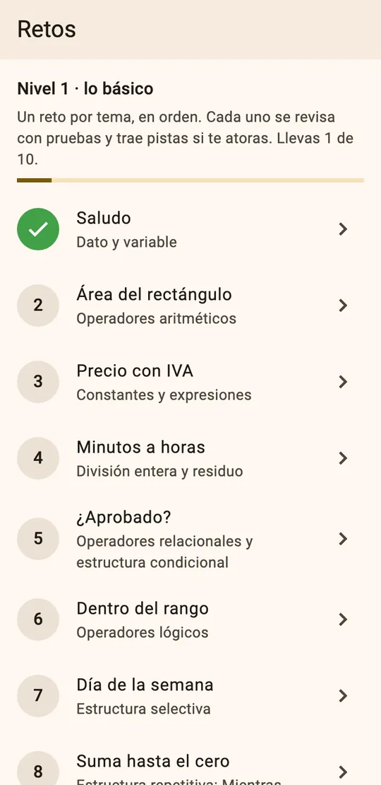
La lista de retos.
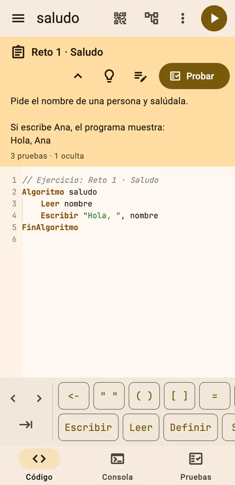
El reto con su enunciado.
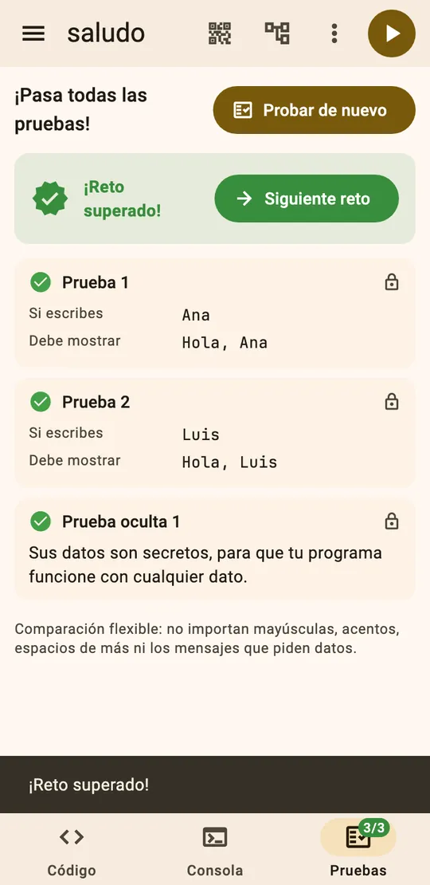
Pasaste todas las pruebas.
8Planteamiento: entrada, proceso y salida
Antes de programar, piensa el problema. El planteamiento te pide tres cosas: qué datos entran, qué haces con ellos y qué muestras al final. Se guarda como comentario al inicio del programa, así que tu profe también lo ve y PSeInt lo abre igual.
En un reto o ejercicio también está el botón de la libreta, junto al foco de las pistas.
9Prueba de escritorio
Jaguar arma la tabla de la prueba de escritorio: una fila por cada paso y una columna por cada variable.
En el celular
Menú ⋮ de arriba → Prueba de escritorio.
En la computadora
Menú Ejecutar → Prueba de escritorio.
En Datos de entrada escribe los datos que va a leer el programa, separados por comas y en orden. Por ejemplo: 7, 10.
Toca Hacer la tabla. Los valores que cambian en cada paso se marcan.
Para practicar, toca Practicar: yo la lleno. Llena la tabla tú y toca Revisar: Jaguar te dice cuántos acertaste y marca en rojo los que no.
Con el botón de copiar de arriba pegas la tabla en tu documento o en una hoja de cálculo.
En la computadora también puedes ir paso a paso: Ejecutar → Paso a paso (F10 o F7). Cada instrucción se ilumina en el código y en el diagrama, y abajo ves el valor de cada variable.
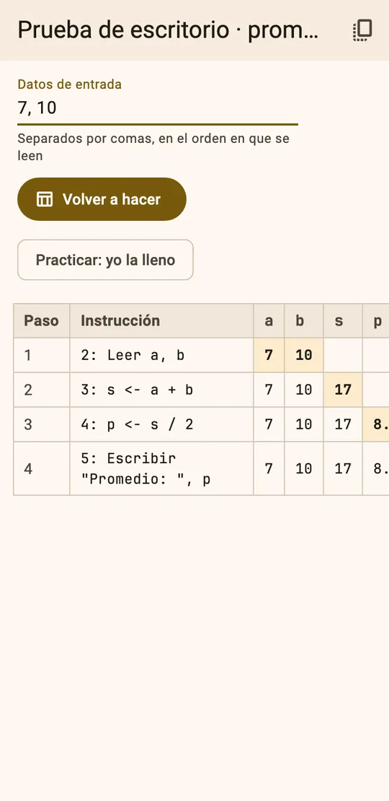
La tabla con los datos 7 y 10.
10Guardar, abrir y compartir
Tus programas se guardan solos en tu celular o en tu navegador, sin cuenta. Los encuentras en la lista de programas.
En el celular
Tus programas: menú ☰. Ahí está Nuevo programa y el bote para eliminar.
Archivos .psc: menú ⋮ → Guardar como .psc, Abrir archivo .psc o Enviar .psc (WhatsApp, correo…).
QR o enlace: el botón del QR de arriba.
En la computadora
Tus programas: panel Mis programas a la izquierda.
Archivos .psc: Guardar (Ctrl+S) y Abrir (Ctrl+O) en la barra.
QR o enlace: Compartir en la barra.
Los archivos .psc son de texto y también los abren otros programas de pseudocódigo; Jaguar abre los que vengan de ahí. Sirven para entregar tareas o para pasar tu programa a la sala de cómputo.
Con Compartir sale un QR. Escanéalo con la cámara de otro celular para abrir ahí el programa, o toca Copiar enlace y mándalo por WhatsApp. Para abrir un enlace que te pasaron: ⋮ → Abrir enlace en el celular o Archivo → Abrir enlace en la computadora.
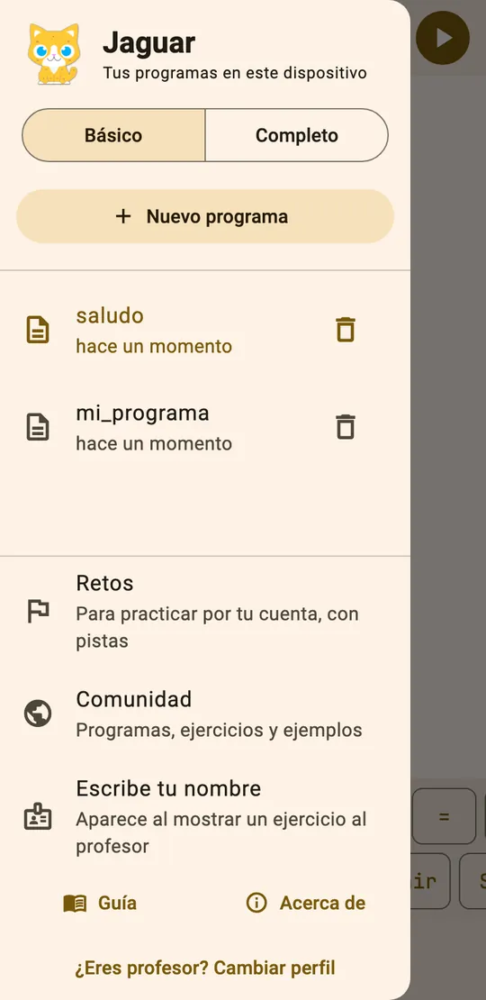
El menú ☰ con tus programas.
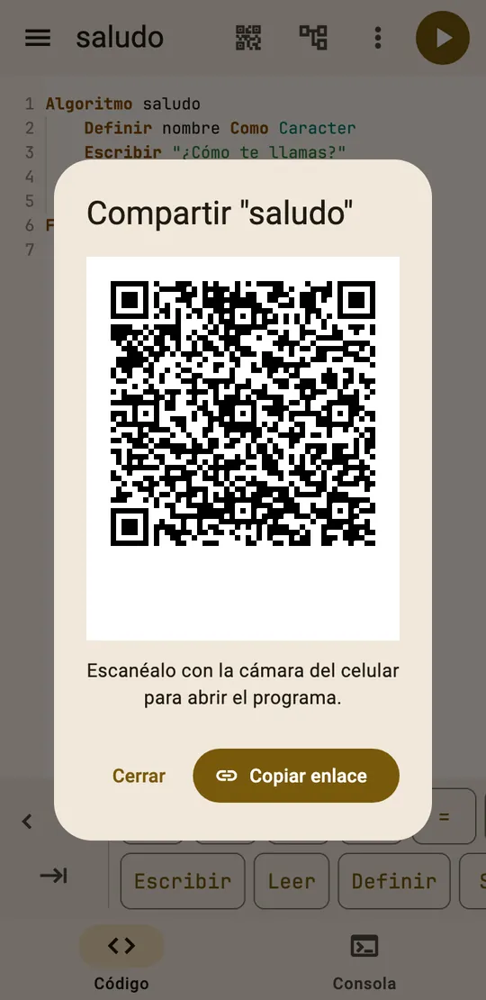
Compartir con QR o enlace.
11Modo Básico y modo Completo
Básico muestra solo lo necesario para empezar. Completo agrega todos los menús (como Editar y Ver), más opciones y la posibilidad de crear tus propias pruebas. Puedes ir y venir sin perder nada, y los atajos de teclado funcionan en los dos.
En el celular
Arriba del menú ☰, en los botones Básico y Completo.
En la computadora
A la derecha de la barra de arriba.
Cuando ya llevas varios programas con ciclos sin errores, Jaguar te sugiere una vez probar el modo Completo. Nunca cambia solo.
12Cambiar de perfil
Si elegiste mal al principio, o si un profe quiere probar como alumno, cambia el perfil: Estoy aprendiendo, Ya sé programar o Soy profesor.
En el celular
Al final del menú ☰: ¿Eres profesor? Cambiar perfil.
En la computadora
Abajo del panel de la izquierda (Alumno · cambiar), o en Ayuda → Cambiar cómo uso Jaguar.
13Unirte a la clase de tu profe
Las clases en línea necesitan internet. Tu profe te da un código como JAG-4K7Q.
Abre Mis clases: en el menú ☰ del celular o en el panel de la izquierda en la computadora.
Toca Entrar, elige Alumno y escribe un alias. No uses tu nombre completo ni datos personales. No necesitas correo.
Toca Unirme con un código. Escribe el código de la clase y tu nombre. Tu nombre solo lo ve tu profe, para saber de quién es cada entrega.
Abre la clase. En Tareas toca Resolver.
Cada vez que presionas Probar, tu resultado le llega a tu profe. Jaguar te avisa: «Tu resultado llegó a tu profesor: 3 de 4.» Puedes seguir mejorando y volver a probar.
¿Sin internet en el salón? Tu profe también puede proyectar un ejercicio como QR. En la app de Android abre el menú de la izquierda y toca Escanear QR del ejercicio (también está en el menú ⋮); en el navegador, escanéalo con la cámara del celular. O abre el enlace que te mandó. El ejercicio queda guardado en tus programas y lo resuelves sin conexión.
14Mostrar al profesor
Cuando un ejercicio de tu profe pasa todas las pruebas, aparece el botón Mostrar al profesor.
La primera vez te pide tu nombre y apellido. Luego sale una pantalla verde con tu nombre, el ejercicio, cuántos casos pasaron y la hora en que se verificó. Abajo hay un reloj que sigue corriendo, así tu profe sabe que es de ahora.
Se ve bien desde lejos: levanta tu celular y listo. Con Ver el código le enseñas tu programa.
Para cambiar tu nombre: menú ☰ → Escribe tu nombre en el celular, o en el panel de la izquierda en la computadora.
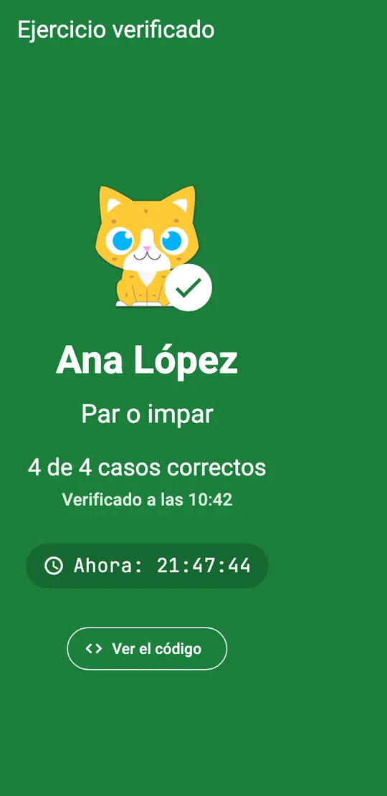
La pantalla verde para enseñar desde tu lugar.
15El botón Atrás en Android
Para que no salgas por accidente, Atrás primero cierra el menú, luego te regresa al código. Si ya estás en el código, Jaguar dice «Presiona Atrás otra vez para salir». Solo sale si lo presionas otra vez enseguida.
Tu programa ya está guardado; al volver lo encuentras igual.
16Instala Jaguar desde el navegador y úsalo sin internet
Si no tienes la app de Android, puedes instalar Jaguar desde el navegador. Queda con su ícono, como cualquier app.
En el celular
Abre Jaguar en Chrome. Toca el menú ⋮ de Chrome y elige Instalar app o Agregar a pantalla principal.
En la computadora
En Chrome o Edge, busca el ícono de instalar en la barra de direcciones, o la opción para instalar en el menú del navegador.
Sin internet
Después de abrir Jaguar una vez, funciona sin conexión. Puedes escribir, ejecutar, dibujar diagramas, hacer retos, prueba de escritorio y resolver los ejercicios que ya abriste. Solo las clases en línea y la comunidad necesitan internet.
Ojo: tus programas viven en ese dispositivo. Si borras los datos del navegador o desinstalas la app, se borran. Guarda como .psc lo que no quieras perder.
Cómo crear ejercicios con pruebas, compartirlos con o sin internet y ver lo que entregan tus alumnos. Si quieres saber qué cubre del programa, lee la guía para profes.
17Elige «Soy profesor»
Al abrir Jaguar por primera vez, elige Soy profesor. Si ya habías elegido otra opción, cambia de perfil.
Jaguar abre Mis ejercicios y quedan a la mano tus herramientas:
En el celular
Mis ejercicios aparece primero en el menú ☰.
En la computadora
Aparece el menú Profesor (en modo Completo) y Mis ejercicios en el panel de la izquierda.
18Crea un ejercicio
Hay dos caminos:
En Mis ejercicios, toca Nuevo ejercicio.
En la computadora, también puedes escribir tu solución en el editor y usar Profesor → Crear ejercicio con este programa. Está igual en el menú de cada programa del panel.
Escribe el título y el enunciado.
En Tu solución escribe el programa como si fueras el alumno. Nunca se comparte.
Toca Generar casos con mi solución. Jaguar propone casos de prueba que recorren los caminos de tu solución.
Revísalos. Puedes editarlos, agregar más o marcar uno como Oculto: el alumno sabe que existe pero no ve sus datos. Así no programan solo para el ejemplo.
Elige cómo se compara la salida. Flexible: no importan mayúsculas, acentos, espacios ni los mensajes que piden datos. Exacta: debe salir igual, línea por línea.
Toca Guardar.
Si cambias tu solución, Recalcular salidas actualiza lo esperado y Comprobar mi solución la corre contra los casos.
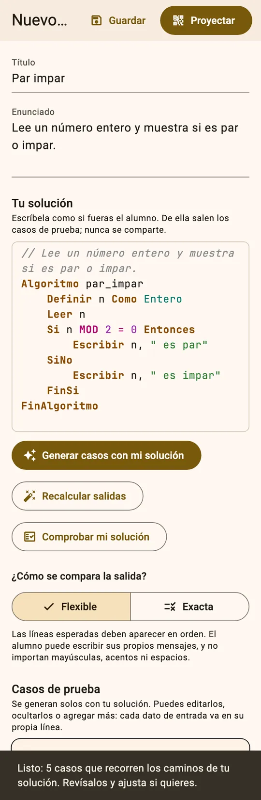
Jaguar propone los casos a partir de tu solución.
19Compártelo con QR o enlace (sin internet)
No necesitas cuenta para esto. En el editor del ejercicio toca Proyectar, o en Mis ejercicios abre el menú del ejercicio y elige Proyectar.
Sale un QR grande para el proyector. Tus alumnos lo escanean con Escanear QR del ejercicio en la app, o con la cámara del celular.
Copiar enlace te da un enlace para WhatsApp o Classroom.
El alumno resuelve, presiona Probar y, si todo pasa, te enseña la pantalla verde con su nombre y la hora.
En el mismo menú del ejercicio están Probar como alumno, para verlo como lo verán ellos, y Compartir en el banco, para que otros profes lo usen (este necesita estar en línea).
20Entra en línea con tu correo
Para tener clases en línea necesitas una cuenta de profesor.
Abre Entrar en línea: en el menú ☰ del celular o en el panel de la izquierda en la computadora.
Elige Profesor.
La primera vez toca ¿Primera vez? Crear cuenta de profesor. Escribe el nombre que verán tus alumnos (por ejemplo, «Profa. López»), tu correo y una contraseña.
Si la olvidas, usa Olvidé mi contraseña y te llega un enlace a tu correo.
21Crea tu clase y asigna ejercicios
Abre Mis clases y toca Crear clase. Ponle un nombre, como «1° A · Lógica».
Jaguar te da un código como JAG-4K7Q. Con Copiar código lo pegas en tu grupo de WhatsApp, o escríbelo en el pizarrón.
Dentro de la clase, toca Asignar ejercicio y elige uno de Mis ejercicios o del banco de la comunidad.
Tus alumnos lo ven en Tareas en cuanto actualizan su clase.
22Revisa las entregas
En tu clase ves una tabla con cada alumno y cada tarea. Cada vez que un alumno presiona Probar, su resultado llega solo: cuántas pruebas pasó y a qué hora. Usa Actualizar para ver lo más reciente.
Toca una celda para ver el programa del alumno. Con Abrir una copia lo abres en tu editor para ejecutarlo o hacer su prueba de escritorio.
La calificación la pones tú. Jaguar te dice qué pruebas pasó cada programa. La rúbrica, la lista de cotejo y la calificación son tuyas.
Funcionan en Básico y en Completo. En Mac usa ⌘ en lugar de Ctrl. Con F1 abres la guía rápida dentro de Jaguar.
Para
Teclas
Ejecutar
Ctrl+Enter · F9
Detener
Shift+F9
Paso a paso (siguiente paso)
F10 · F7
Ejecutar hasta la línea del cursor
F4
Probar un ejercicio o reto
Ctrl+Shift+Enter
Guardar como .psc · Abrir .psc
Ctrl+S · Ctrl+O
Ver pseudocódigo · diagrama · ambos
Ctrl+Alt+1 · 2 · 3
Buscar · Reemplazar
Ctrl+F · Ctrl+H
Ir a una línea
Ctrl+G
Comentar o descomentar líneas
Ctrl+/
Mover línea · Duplicar línea
Alt+↑/↓ · Shift+Alt+↓
Ordenar la sangría
Shift+Alt+F
Renombrar variable
F2
Sugerencias
Ctrl+Espacio
Letra más grande · más chica
Ctrl++ · Ctrl+-
Guía rápida
F1
Si algo no sale
Problemas comunes
Mi programa no avanza
Seguro está en un Leer esperando un dato. En el celular la pestaña Consola tiene un punto: ábrela, escribe el dato y presiona Enter. Si es un ciclo que nunca termina, detenlo con el botón rojo (o Shift+F9) y revisa la condición.
Dice «Parece un texto sin comillas»
Los textos van entre comillas: Escribir "Hola". Sin comillas, Jaguar piensa que Hola es una variable. La sugerencia del error trae la línea ya corregida.
No veo el diagrama
En el celular toca el botón de diagrama de arriba, junto al QR. En la computadora elige Diagrama o Ambos en la barra. Si el código tiene un error, corrígelo y el diagrama se actualiza.
Perdí mi programa
Búscalo en el menú ☰ (celular) o en Mis programas (computadora): Jaguar guarda todo solo. Recuerda que se guarda en ese dispositivo y en ese navegador. Si cambiaste de celular o borraste los datos del navegador, no estará; por eso conviene guardar como .psc o compartirlo con un enlace.
Una prueba oculta falla y no sé por qué
Sus datos son secretos. Prueba tu programa con otros valores: cero, negativos, números grandes o iguales. Casi siempre ahí está el detalle.
No me sale el QR
Si el programa es muy largo no cabe en un QR. Usa Copiar enlace o guárdalo como .psc.
No encuentro «Mis clases»
Las clases necesitan internet. Conéctate y vuelve a abrir Jaguar. Lo demás funciona sin conexión.
No veo el menú Editar, Ver o Profesor
Están en modo Completo. El menú Profesor aparece si tu perfil es Soy profesor.
En la computadora se ve como en el celular
La ventana es angosta. Maximízala o hazla más ancha y Jaguar cambia a la vista de computadora.